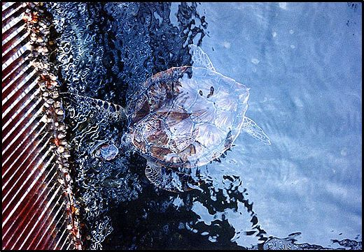
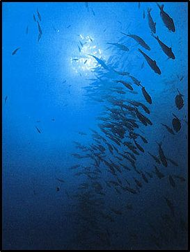

Οι θαλάσσιοι οργανισμοί μπορούν να διακριθούν σε διάφορες κατηγορίες, ανάλογα με τα κριτήρια που θα χρησιμοποιηθούν κάθε φορά. Έτσι μπορεί να γίνει διάκριση με βάση τον χώρο που ζουν, τον τρόπο που δεσμεύουν την ηλιακή ενέργεια, το μέγεθός τους, την κατακόρυφη ή την οριζόντια κατανομή τους στην θάλασσα. Μια βασική διάκριση είναι με βάση τον χώρο που κινούνται.
ΠΕΛΑΓΙΚΟΙ
Είναι οι οργανισμοί που ζουν στη μάζα του νερού και διακρίνονται με την σειρά τους σε:
Πλαγκτόν
Πλαγκτόν ονομάζουμε κάθε φυτικό (φυτοπλαγκτόν) ή ζωικό (ζωοπλαγτόν) μικροοργανισμό που πλανάται παθητικά από τον βυθό μέχρι την επιφάνεια. Οι πλαγκτονικοί οργανισμοί έχουν μικρή δυνατότητα αυτόνομης κίνησης, ενώ το μικρό τους μέγεθος έχει ως αποτέλεσμα να παρασύρονται από τα θαλάσσια ρεύματα και να πλανώνται μέσα στο νερό.
Νηκτό
Το νηκτό περιλαμβάνει οργανισμούς που έχουν την ικανότητα να κινούνται αυτόνομα μέσα στο νερό. Τέτοιοι οργανισμοί είναι τα ψάρια, τα θαλάσσια θηλαστικά, τα θαλάσσια ερπετά (χελώνες).
ΒΕΝΘΙΚΟΙ
Είναι οι οργανισμοί που ζουν σε συνάφεια με τον πυθμένα. Οι βενθικοί οργανισμοί διακρίνονται με την σειρά τους σε:
Ζωοβένθος
Είναι οι βενθικοί ζωϊκοί οργανισμοί που ζουν είτε μέσα στο ίζημα του βυθού όπως τα σκουλήκια και τα κοχύλια, είτε πάνω στο βυθό όπως οι αχινοί, τα καβούρια και οι αστερίες, είτε κοντά σε αυτόν, όπως τα χταπόδια, οι γλώσσες, τα μπαρμπούνια.
Φυτοβένθος
Είναι οι βενθικοί φυτικοί οργανισμοί που ζουν είτε προσκολλημένοι πάνω στο υπόστρωμα του βυθού όπως τα μακροφύτη, είτε αναπτύσσουν ριζικό σύστημα μέσα στο υπόστρωμα, όπως τα λιβάδια ανώτερων φυτών.
ΑΥΤΟΤΡΟΦΟΙ
Αυτότροφοι οργανισμοί είναι τα φυτά τα οποία μέσω της φωτοσύνθεσης δεσμεύουν την ηλιακή ενέργεια και συνθέτουν οργανικές ενώσεις απαραίτητες για την ζωή τους.
ΕΤΕΡΟΤΡΟΦΟΙ
Ετερότροφοι οργανισμοί είναι οι ζωϊκοί οργανισμοί, που δεν μπορούν να δεσμεύσουν ηλιακή ενέργεια και χρησιμοποιούν έτοιμη οργανική ύλη
